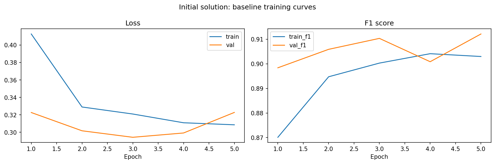
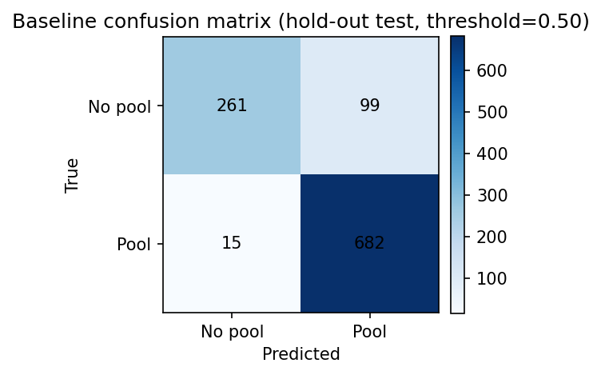
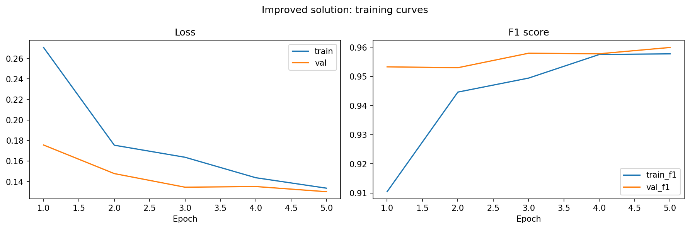
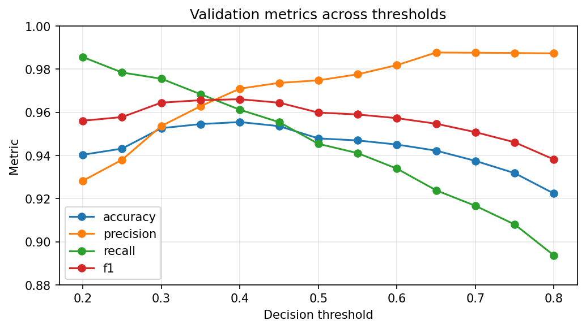
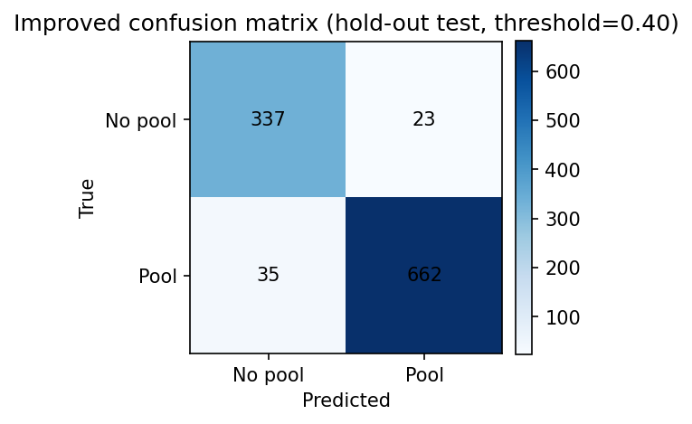
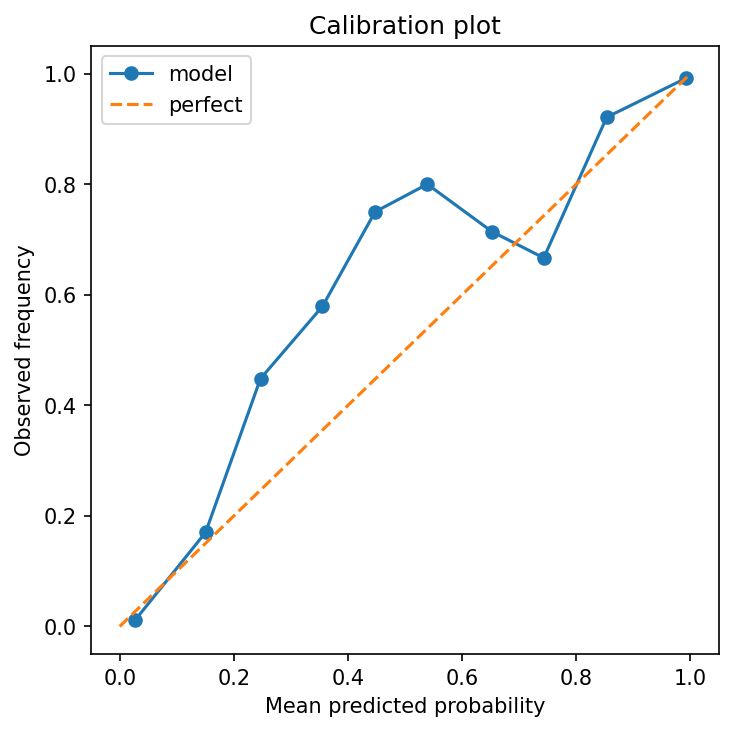

This report presents a fair two-stage modelling workflow for swimming pool classification from imagery. Both the initial and improved solutions are trained and selected on the same train and validation splits, and both are compared on the same untouched hold-out test set. This makes the final comparison easier to interpret.
| split | rows | no_pool | pool | pool_rate |
|---|---|---|---|---|
| full_available | 7043 | 2400 | 4643 | 0.659236 |
| modelling_source_full_data | 7043 | 2400 | 4643 | 0.659236 |
| train | 4930 | 1680 | 3250 | 0.659229 |
| validation | 1056 | 360 | 696 | 0.659091 |
| holdout_test | 1057 | 360 | 697 | 0.659413 |
Model: ResNet18 transfer learning
Preprocessing: resize to 224×224, ImageNet normalization
Selection: best validation F1 with early stopping
Test evaluation: untouched hold-out test set
| stage | threshold | accuracy | precision | recall | f1 | roc_auc | loss |
|---|---|---|---|---|---|---|---|
| initial_solution | 0.5 | 0.892148 | 0.873239 | 0.978479 | 0.922869 | 0.950506 | 0.286007 |


Changes from baseline:
Selected threshold: 0.40
| stage | threshold | accuracy | precision | recall | f1 | roc_auc | loss |
|---|---|---|---|---|---|---|---|
| improved_solution | 0.4 | 0.945128 | 0.966423 | 0.949785 | 0.958032 | 0.988084 | 0.138153 |





| threshold | accuracy | precision | recall | f1 | roc_auc |
|---|---|---|---|---|---|
| 0.40 | 0.955492 | 0.970972 | 0.961207 | 0.966065 | 0.988973 |
| 0.35 | 0.954545 | 0.962857 | 0.968391 | 0.965616 | 0.988973 |
| 0.30 | 0.952652 | 0.953652 | 0.975575 | 0.964489 | 0.988973 |
| 0.45 | 0.953598 | 0.973646 | 0.955460 | 0.964467 | 0.988973 |
| 0.50 | 0.947917 | 0.974815 | 0.945402 | 0.959883 | 0.988973 |
| 0.55 | 0.946970 | 0.977612 | 0.941092 | 0.959004 | 0.988973 |
| 0.25 | 0.943182 | 0.938017 | 0.978448 | 0.957806 | 0.988973 |
| 0.60 | 0.945076 | 0.981873 | 0.933908 | 0.957290 | 0.988973 |
| 0.20 | 0.940341 | 0.928281 | 0.985632 | 0.956098 | 0.988973 |
| 0.65 | 0.942235 | 0.987711 | 0.923851 | 0.954714 | 0.988973 |
| 0.70 | 0.937500 | 0.987616 | 0.916667 | 0.950820 | 0.988973 |
| 0.75 | 0.931818 | 0.987500 | 0.908046 | 0.946108 | 0.988973 |
| 0.80 | 0.922348 | 0.987302 | 0.893678 | 0.938160 | 0.988973 |
| step | seconds | minutes |
|---|---|---|
| improved_training | 1384.081499 | 23.068025 |
| baseline_training | 892.585927 | 14.876432 |
| baseline_evaluation | 48.916907 | 0.815282 |
| improved_evaluation | 48.832065 | 0.813868 |
| threshold_tuning | 48.789461 | 0.813158 |
| load_labels | 0.150931 | 0.002516 |
| split_data | 0.002302 | 0.000038 |
| improved_dataloaders | 0.001755 | 0.000029 |
| baseline_dataloaders | 0.000230 | 0.000004 |
The initial solution answers a modest but important question: can a standard transfer-learning model separate pool from no-pool under a simple setup? The improved solution then focuses on reliability while keeping the comparison fair by using the same data split. Rather than changing data volume between stages, it improves the experimental design and the decision rule.
All outputs are written under reports/cv, including figures, saved model weights, metrics, timing logs, the saved configuration, and this HTML report. The script is intended to run end-to-end with a single command and no manual interaction.